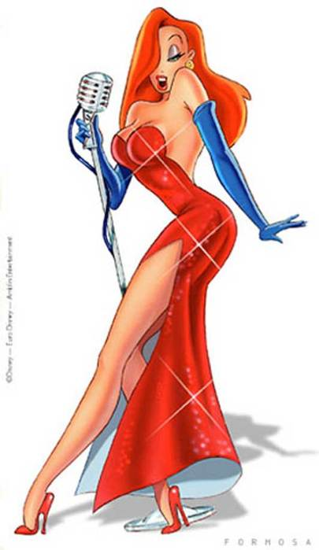

— Elena> Алексей, ваша программа опять не работает! Достало уже! Я буду жаловаться.
— polecat> Добрый день, в чём выражается проблема?
— Elena> Не парьте мозги, программа не работает! Исправьте! У меня работа стоит!
— polecat> Для того чтобы исправить программу, для начала мне нужно узнать, что вы понимаете под проблемой.
Рубрика: Анекдоты
Индеец в банке
Старый индеец приходит в банк и просит займ на 500 долларов. Банковский работник начинает оформлять бумаги.
— Что ты собираешься делать с этими деньгами? - спрашивает он индейца.
— Я поеду в город продавать украшения, которые я сделал.
— Что у тебя есть для обеспечения залога?
Мотивация по-русски
Я сегодня услышал историю про мотивацию по–русски. Я горд.
Суть: в головном офисе крупной и известной американской компании решили провести аттракцион невиданной толерантности. Постановили устроить гей — фестиваль из представителей всех офисов.
В русский офис пришла разнарядка — прислать 3 геев. Менеджмент крепко задумался.
Созвали собрание, начали думать. Придумали.
Вышло постановление: руководители подразделений, которые достигнут самых низких результатов за квартал едут на гей–парад.
Такого производства, продаж, маркетинга, рекламы, снабжения компания не видела никогда — производительность повысилась на 100% и выше.
И менеджмент добился своих результатов — и профит получили, и пид...расов выбрали.
А вы говорите — премии, обучения, карьерный рост, видение, миссия компании...
Исскуство дипломатии
Однажды у Генри Киссинджера спросили:
— Что такое челночная дипломатия?
Киссинджер ответил:
— О! Это универсальный метод! Поясню на примере: Вы хотите методом челночной дипломатии выдать дочь Рокфеллера замуж за простого парня из русской деревни. Как это сделать?
Про воспитание
Ехала с универа на трамвае. Сзади сидела какая-то мамаша с 9-11 летним ребенком на руках. И вот этот "малыш" постоянно меня тыкал ногой в грязных ботинках по белым брюкам (специально, понравилась я ему, наверное), на что я обратилась к его мамаше с просьбой его унять. Она мне сказала, что ОНИ воспитывают ребенка по системе какого-то "Эйху..зера",
Как обезьяны демонстрируют основные понятия о человеке
Клетка. В ней 5 обезьян. К потолку подвязана связка бананов. Под ними лестница. Проголодавшись, одна из обезьян подошла к лестнице с явными намерениями достать банан. Как только она дотронулась до лестницы, вы открываете кран и со шланга поливаете ВСЕХ обезьян очень холодной водой. Проходит немного времени, и другая обезьяна пытается полакомится бананом. Те же действия с вашей стороны.
ОТКЛЮЧИТЕ ВОДУ.
Несколько анекдотов про славянскую ментальность
Некто, как положено, поймал американца, француза и русского. Рассадил всех троих по отдельным пустым камерам, дал каждому по два железных шарика и сказал: "Кто с этими шариками сделает что-то интереснее, чем остальные, того отпущу". Американец жонглировал одним шариком. Его не отпустили. Француз жонглировал двумя шариками.
О предметности советов на форумах
Джессика
Компания Cadbury провела опрос, по результатам которого супруга Кролика Роджера по имени Джессика была названа самым сексуальным анимационным персонажем.

Шикарные формы, огромные глаза и томный голос Джессики принес ей голоса 37 процентов респондентов. Миссис Рэббит дебютировала на экранах в анимационных сериалах 80-х годов, а ее первым полнометражным фильмом стал "Кто подставил Кролика Роджера" Роберта Земекиса.
Помни о родителях
Жил когда-то в Нью-Джерси один старый итальянец. Он хотел посадить помидоры в своём саду, но это была очень тяжёлая работа, так как земля была тверда. Его единственный сын — Винсент, который всегда ему помогал, сидел в тюрьме.
Старик написал ему письмо: